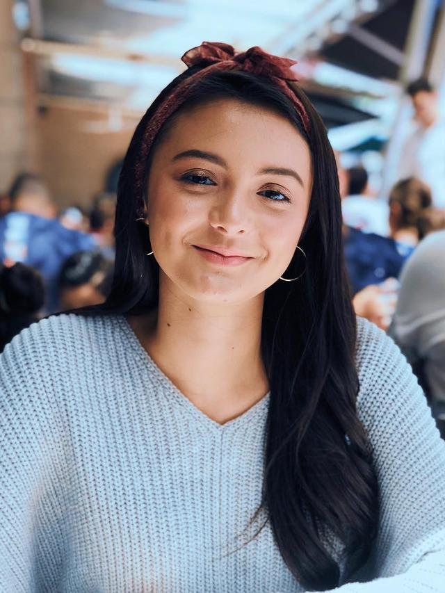
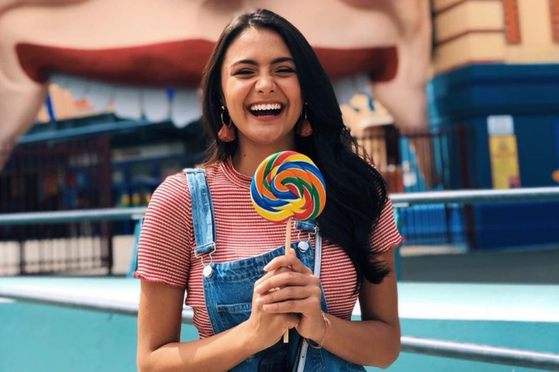

<!DOCTYPE html>
<html lang="en">
<head>
    <meta charset="UTF-8">
    <meta http-equiv="X-UA-Compatible" content="IE=edge">
    <meta name="viewport" content="width=device-width, initial-scale=1.0">
    <title>Profile Amanda Rawles/title>
    <style>
        .satu {
            float: left;
            padding: 35px;
        }
        .dua {
            text-align: right;

        }
        ul {
            text-align: right;
            list-style: none;

         }

    </style>
</head>
<body>
    <fieldset>
        <legend>Profile Page</legend>
        <div class="satu" style="float: right; padding: 35px;">
            <p class="dua" style="text-align: right;"><u>Categories</u></p>
            <ul style="text-align: right; list-style: none;">
                <li>Amanda Carol Rawles</li>
                <li>Karier and Prsonal Data</li>
                <li>Video and Photo</li>
                <li>Attachments</li>
            </ul>
        </div>
        
        <div>
            <h1>Amanda Carol Rawles</h1>
            <form>
                <table>
                    <tr>
                        <td><b>Nama Panggung</b></td>
                        <td>:</td>
                        <td>Amanda Rawles</td>
                    </tr>
                    <tr>
                        <td><b>Tempat Tanggal Lahir</b></td>
                        <td>:</td>
                        <td>Jakarta, 25 Agustus 2000</td>
                    <tr>
                    <tr>
                        <td><b>Umur</b></td>
                        <td>:</td>
                        <td>21 Tahun</td>
                    <tr>
                    <tr>
                        <td><b>Status</b></td>
                        <td>:</td>
                        <td>Belum Menikah</td>
                    <tr>
                    <tr>
                        <td><b>Jenis Kelamin</b></td>
                        <td>:</td>
                        <td>Perempuan</td>
                    <tr>
                        <td><b>Tinggi Badan</b></td>
                         <td>:</td>
                    <td>165 Cm</td>
                    </tr>
                    <tr>
                        <td><b>Berat Badan</b></td>
                        <td>:</td>
                        <td>50 Kg</td>
                    </tr>
                    <tr>
                         <td><b>Keturunan</b></td>
                        <td>:</td>
                        <td>Australia-Indonesia</td>
                    </tr>
                    <tr>
                        <td><b>Kewarganegaraan</b></td>
                        <td>:</td>
                        <td>Indonesia</td>
                    </tr>
                    </tr>
                         <td><b>Ayah</b></td>
                         <td>:</td>
                         <td>Shane Rawles</td>
                    </tr>
                    <tr>
                        <td><b>Ibu</b></td>
                        <td>:</td>
                        <td>Nasriyah</td>
                    </tr>
                    </tr>
                         <td><b>Kaka</b></td>
                         <td>:</td>
                         <td>Annisa Carol Rawles</td>
                    </tr>
                    <tr>
                        <td><b>Adik</b></td>
                        <td>:</td>
                        <td>Aiden Carol Rawles</td>
                    </tr>
                     
                    </tr>
                         <td><b>Instagram</b></td>
                         <td>:</td>
                         <td>@amandarawles</td> 
                    </tr>

                </table>
                </form>
        </div>
        <br>
        <h2>Karier and Personal Data</h2>
                <p>Amanda yang berdarah Australia-Indonesia ini mengawali karier di usia 12 tahun lewat sinetron Jagoan Silat. Beranjak remaja, kariernya menanjak ke layar lebar melalui film 7 Hari Menembus Waktu (2015). Di film ini ia masih memperoleh peran tritagonis. Setelah membintangi beberapa film layar lebar lain, Amanda berkesempatan menjadi pemeran utama wanita lewat film Promise (2017) berpasangan dengan Dimas Anggara, lalu namanya mulai menjadi sorotan saat menjadi pemeran utama wanita di film Dear Nathan berpasangan dengan Jefri Nichol yang kemudian juga berpasangan dengannya di beberapa film berikutnya.</p>
                <p>Amanda merupakan adik dari Annisa Rawles yang juga sempat membintangi film Single besutan Raditya Dika. Ia memiliki adik bernama Aiden Rawles.
                    Semasa kecil Amanda pernah menjadi korban perisakan dari anak-anak laki-laki karena fisiknya dianggap hitam dan kurus.</p>
                    <iframe style="padding: 75px 75px 0px 25px" width="350px" height="200px" src="https://www.youtube.com/embed/y38Sl94Nhdg" title="YouTube video player" frameborder="0" allow="accelerometer; autoplay; clipboard-write; encrypted-media; gyroscope; picture-in-picture" allowfullscreen></iframe>
            
            <div style="width: 350px; height: 250px; border: 2px solid; display: inline-block;">
                <div>
                    
                    
                    </div>
                    <div>
                    
                    
                    </div>
            </div>
               <fieldset style="width: 325px; height: 180px; float: right; margin-right: 65px; margin-top: 72px;">
                   <legend>Attachments</legend>
                   <div style="width: 325px; height: 187px;">
                        <a href="https://id.wikipedia.org/wiki/Amanda_Rawles" style="margin-left: 25px;">Single</a>
                       <br>
                        <a href="https://id.wikipedia.org/wiki/Amanda_Rawles" style="margin-left: 25px;">Data Pribadi</a>
                       <br>
                        <a href="https://id.wikipedia.org/wiki/Amanda_Rawles" style="margin-left: 25px;">Filmografi</a>
                       <br>
                        <a href="https://id.wikipedia.org/wiki/Amanda_Rawles" style="margin-left: 25px;">Buku</a>
                   </div>
               </fieldset>
    </fieldset>
</body>
</html>